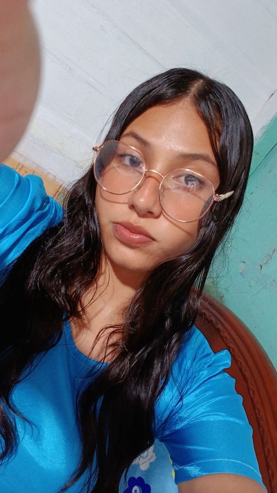

Bachiller
Informática
Unidad Educativa "Dr. Luis Fernando Vivero"
2019 - 2025

Maestra de Educación Inicial
ContactarSoy Daniela Ruiz-Vera, estudiante de la Universidad Técnica Estatal de Quevedo, Posorja - Ecuador. Tengo experiencia en educación inicial, decoracion de fiestas, aplicaciones web y manualidades.
Informática
Unidad Educativa "Dr. Luis Fernando Vivero"
2019 - 2025
Ingenieria en Sistemas
University of Quevedo, Ecuador
2025 - hasta la actualidad
Educacion inicial y secretaria de la institucion
Desde 2025 hasta la actualidad
Desarrollo de decoraciones para fiestas infantiles y eventos especiales, incluyendo diseño de temáticas, montaje y coordinación de actividades.
Email: druiz@uteq.edu.ec
Email alternativo: daniela_uteq@gmail.com
Teléfono: (+593) 986 157 427
ORCID: 0000-0001-8568-8024
Enviar correo